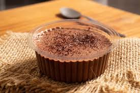
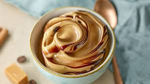
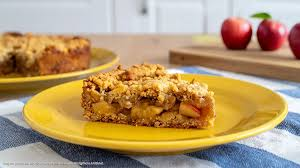

Voltar para a página principal
Sobremesas
Segue sugestões de receitas sobre sobremesas
-
Mousse de Chocolate de 3 Ingredientes

Ingredientes
- 1 lata de leite condensado
- 1 caixinha de creme de leite
- 1 xícara de chocolate em pó (50% cacau)
Modo de preparo
- Bata tudo no liquidificador por 5 minutos (isso cria
bolhas de ar)
- Leve à geladeira por 3 horas. Até ficar firme e aveludado
- Sirva em uma travessa de vidro
-
Mousse de Doce de Leite com Toque de Sal

Ingredientes
- 1 lata de doce de leite de boa qualidade
- 1 caixinha de creme de leite (200g)
- 3 claras de ovo
- Uma pitada generosa de flor de sal (ou sal comum)
Modo de preparo
- Em uma tigela, bata o doce de leite com o creme de leite e a
pitada de sal até ficar um creme bem homogêneo
- Bata as claras em neve até ficarem bem firmes (ponto de pico)
- Incorpore as claras em neve ao creme de doce de leite bem devagar
, fazendo movimentos de baixo para cima com uma espátula
- Coloque em taças e leve à geladeira por 3 horas. Sirva com um
pouquinho mais de sal por cima se gostar do contraste
-
Crumble de Maçã Quentinho

Ingredientes
- 3 maçãs picadas em cubos
- 2 colheres de açúcar
- 1 colher de chá de canela
- 1/2 xícara de farinha de trigo
- 1/2 xícarade açúcar (preferência mascavo)
- 3 colheres de sopa de manteiga gelada em cubinhos
Modo de preparo
- Misture as maçãs picadas com o açúcar e a canela diretamente no
refratário que vai ao forno
- Em uma tigela, misture a farinha, o açúcar e a manteiga com a
ponta dos dedos. Não amasse muito
- Cubra as maçãs com essa farofa
- Leve ao forno médio (180°C) por cerca de 25 a 30 minutos
- Sirva quente. Se tiver um pote de sorvete de creme no
congelador, a combinação fica digna de melhor da cidade